방송통신산업기사 (2017-10-14 기출문제)
1과목: 디지털 전자회로
1. P형과 N형 사이에 샌드위치 형태의 특별한 반도체층인 진성층을 갖고 있으며, 이 층이 다이오드의 커패시턴스를 감소시켜 일반적인 다이오드보다 고주파에서 동작하며, RF스위칭용으로 사용되는 다이오드는?
- 핀(PIN) 다이오드
- 건(Gunn) 다이오드
- 임팻(IMPATT) 다이오드
- 터널(Tunnel) 다이오드
(정답률: 89%)

2. 전압 안정계수가 0.1인 정전압회로의 입력전압이 ±5[V] 변화할 때 출력전압의 변화는?
- ±0.01[mV]
- ±1.2[mV]
- ±0.2[V]
- ±0.5[V]
(정답률: 79%)
3. 다음 그림과 같은 전압궤환 바이어스회로에서 콘덴서 ‘C’에 대한 설명으로 틀린 것은?
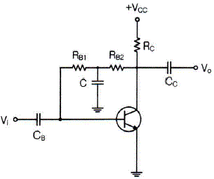
- 교류신호 이득 감소방지용 바이패스 콘덴서
- 콘덴서 C는 직류적으로 개방(Open)
- 콘덴서 C는 교류적으로 단락(Short)
- 교류신호 입력 시 베이스로 부궤환을 유도키 위한 소자
(정답률: 81%)
4. 다음 중 이상적인 연산증폭기의 특징이 아닌 것은?
- 입력 임피던스가 무한대이다.
- 대역폭이 무한대이다.
- 출력 임피던스가 무한대이다.
- 전압이득이 무한대이다.
(정답률: 83%)
5. 다음 그림과 같은 미분연산기에 입력파형을 구형파로 인가하였을 때의 출력파형은?
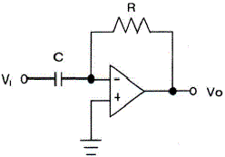
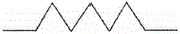
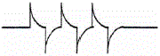
(정답률: 82%)
6. 다음 중 발진 주파수가 변하는 주요 요인이 아닌 것은?
- 전원 전압의 변동
- 주위의 온도 변화
- 부하의 변동
- 대역폭의 변화
(정답률: 70%)
7. 다음 중 하틀리 발진기에서 궤환 요소에 해당하는 것은?
- 저항성
- 용량성
- 유도성
- 결합성
(정답률: 70%)
8. 다음 그림과 같은 전압궤환 Bias회로에서 IE는 얼마인가? (단, β=50, VBE=0.7[V], VCC=10[V]이다.)
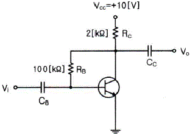
- 2.35[mA]
- 2.35[A]
- 4.6[mA]
- 4.6[A]
(정답률: 66%)
9. 아날로그 TV의 영상신호 전송에 사용되는 방식으로 한 쪽 측파대의 일부를 남겨 통신하는 방식은?
- VSB(Vestigial Side Band)
- DSB(Double Side Band)
- SSB(Single Side Band)
- FSK(Frequency Shift Keying)
(정답률: 73%)
10. 다음 중 디지털 변복조 방식을 사용하는 디지털 통신 시스템을 설계할 때 설계 목표로서 거리가 먼 것은?
- 최대 데이터 전송률
- 최소 심볼 오류
- 최소 점유 대역폭
- 최대 전송 전력
(정답률: 68%)
11. 최고주파수가 15[kHz]인 신호파를 펄스변조할 경우 표본화의 최저 주파수는?
- 45[kHz]
- 30[kHz]
- 20[kHz]
- 15[kHz]
(정답률: 70%)
12. AM 피변조파의 반송파, 상측파대, 하측파대의 각 전력성분의 비는? (단, m은 변조도이다.)
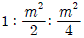
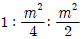
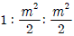
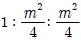
(정답률: 68%)
13. 다음 중 오버슈트(Overshoot)에 대한 설명으로 옳은 것은?
- 펄스 상승 부분의 진동의 정도를 말한다.
- 이상적 펄스의 상승 시각에서 진폭의 90[%]까지 이르는 것을 말한다.
- 이상적 펄스의 하강 시각에서 진폭의 10[%]까지 이르는 것을 말한다.
- 상승 파형에서 이상적 펄스 파의 진폭보다 높은 부분의 높이를 말한다.
(정답률: 80%)
14. 다음 중 전압의 특정한 레벨의 위 또는 아래를 자르기 위해 사용되는 회로는?
- 슈미트 트리거(Schmitt Trigger)
- 멀티바이브레이터(Multivibrator)
- 클리퍼(Clipper)
- 클램퍼(Clamper)
(정답률: 83%)
15. 다음 중 순서 논리 회로에 대한 설명으로 틀린 것은?
- 입력 신호와 순서 논리 회로의 현재 출력상태에 따라 다음 출력이 결정된다.
- 조합 논리 회로와 결합하여 사용할 수 없다.
- 순서 논리 회로의 예로 카운터, 레지스터 등이 있다.
- 데이터의 저장 장소로 이용 가능하다.
(정답률: 71%)
16. 다음 중 TTL(Transistor Transistor Logic) 회로의 특징이 아닌 것은?
- 집적도가 높다.
- 동작속도가 빠르다.
- 소비 전력이 비교적 적다.
- 온도의 영향을 적게 받는다.
(정답률: 79%)
17. 다음 그림의 회로에 해당하는 논리기호는? (단, 정논리이다.)
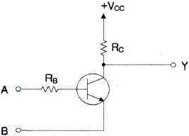
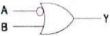
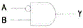
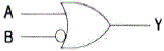
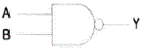
(정답률: 76%)
18. 4비트 5진 계수기의 상태를 올바르게 나타낸 것은?
- 0000 → 0001 → 0010 → 0011 → 0100 → 0000
- 0000 → 0001 → 0010 → 0100 → 1000 → 1001
- 0001 → 0010 → 0011 → 0100 → 0101 → 0000
- 0001 → 0010 → 0100 → 1000 → 1001 → 0000
(정답률: 81%)
19. 다음 중 인코더(Encoder)에 대한 설명으로 옳은 것은?
- 2진 코드형식의 신호를 출력 신호로 변환
- 해당 값에 맞는 번호에만 1을 출력하는 회로
- 여러 가지 2진수의 덧셈기로 형성된 회로
- 입력신호의 자료를 2진 코드로 변환
(정답률: 70%)
20. 다음에 설명하는 논리회로소자로 알맞은 것은?
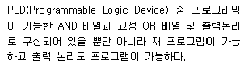
- PLA(Programmable Logic Array)
- GAL(Generic Array Logic)
- PLE(Programmable Logic Element)
- PAL(Programmable Array Logic)
(정답률: 82%)
2과목: 방송통신 기기
21. 방송프로그램 제작 설비 중 여러 가지 오디오소스 입력들의 레벨과 음색을 조정하고 효과를 더한 다음 합성하여 출력하는 장치를 무엇이라 하는가?
- 믹싱 콘솔(Mixing Console)
- 효과기(Effecter)
- 패치 패널(Patch Panel)
- 인코더(Encoder)
(정답률: 85%)
22. 다음 중 도파관(Wave Guide)에 대한 설명과 거리가 먼 것은?
- 동축케이블에 비해 저항체 손실이 적다.
- 주로 저주파 대역에서 급전선용으로 사용된다.
- 도파관은 공기가 사용되므로 유전체 손실이 적다.
- 전자파를 외부로 방사하지 않아 손실이 적다.
(정답률: 75%)
23. 두 개의 신호에 대한 전력비가 10[dB]의 차이가 났을 때 P2/P1의 비율 값은 얼마인가?
- 10
- 3
- 6
- 2
(정답률: 70%)
24. 다음 중 전파에 관한 일반적인 설명으로 틀린 것은?
- 전파는 진동방향과 수직방향으로 진행한다.
- 전파는 법률로 구속, 관리하는 3,000[GHz] 이하의 전자파이다.
- 전파는 파장이 길수록 감쇠가 적어 원거리 통신에 유리하다.
- 전파는 파장이 짧을수록 회절성이 좋아 장애물 통신에 유리하다.
(정답률: 73%)
25. 다음 중 디지털 변조방식에 해당되지 않는 것은?
- ASK
- FSK
- QAM
- FM
(정답률: 84%)
26. 100[kHz]로 샘플링하고 샘플링당 10비트를 할당하는 경우 10초 동안 생성되는 비트수는?
- 105
- 106
- 107
- 108
(정답률: 69%)
27. 다음 중 AM 및 FM에 대한 설명으로 잘못된 것은?
- 아날로그 변조방식이다.
- AM은 반송파의 진폭을 활용한다.
- FM은 AM보다 낮은 주파수 대역을 사용하다.
- 현재 라디오방송에 활용된다.
(정답률: 82%)
28. 반송파주파수가 102[MHz], 신호주파수가 5[kHz]인 신호가 최대주파수편이 25[kHz]로 주파수변조되면 변조지수는 얼마인가?
- 2.5
- 5
- 10
- 15
(정답률: 57%)
29. 다음 중 TV 중계차에서 연주소로 전송하는 회선은?
- FPU
- STL
- TSL
- FSS
(정답률: 68%)
30. 다음 중 디지털 CATV의 특성과 거리가 먼 것은?
- 다채널로 전문화된 프로그램을 전송할 수 있다.
- 불특정 다수의 시청자를 대상으로 하는 무료방송이다.
- 쌍방향 통신이 가능하므로 시청자가 프로그램의 선택과 제작에 참여할 수 있다.
- 방송서비스 외에 원격검침(Telemetering), 방법, 방재 등에 이용된다.
(정답률: 84%)
31. 칼라 TV의 휘도성분이 E=0.30ER+0.59EG+0.11EB일 때 노란색의 출력은 얼마인가?
- 0.89
- 1.00
- 0.70
- 0.41
(정답률: 81%)
32. CATV 전송선로의 C/N비에 대하여 잘못 기술한 것은?
- 하향 채널의 C/N비는 직렬 연결된 선로 증폭기의 수가 2배가 될 때마다 3[dB]씩 열화된다.
- 동일한 C/N비를 갖는 2개의 다른 선로를 결합할 경우 C/N비는 3[dB] 열화된다.
- 하향 채널의 C/N비는 선로 길이가 길수록 낮아진다.
- 서로 다른 C/N비를 갖는 2개의 선로를 결합할 경우 D/N 비의 차이가 클수록 낮은 쪽 C/N 비의 선로를 더 많이 열화시킨다.
(정답률: 71%)
33. 특성 임피던스가 50[Ω]의 선로에 부하 저항으로 75[Ω]을 연결한 경우 정재파비(VSWR) 값은 얼마인가?
- 0.2
- 0.4
- 1
- 1.5
(정답률: 72%)
34. 다음 중 동기신호를 관한 설명으로 틀린 것은?
- 영상카메라를 주사할 때와 동일한 주사를 수상기에서도 할 수 있도록 한다.
- 동기신호가 맞지 않으면 화면은 정상이나 음성에 문제가 생긴다.
- 동기신호에는 수평동기신호와 수직동기신호가 있다.
- 동기신호는 영상신호가 나타나지 않는 귀선기간에 삽입한다.
(정답률: 67%)
35. 다음 중 TV 위성중계기의 구성부분이 아닌 것은?
- 저잡음 증폭기(LNA)
- 전력증폭기
- 주파수 변환기
- 인코더(Encoder)
(정답률: 66%)
36. 다음 중 Ku Band의 주파수 범위에 속하는 것은?
- 4 ~ 8[GHz]
- 8 ~ 10[GHz]
- 12 ~ 18[GHz]
- 20 ~ 27[GHz]
(정답률: 70%)
37. 송신기의 디지털 변조방식 중 2비트로 구성된 4개의 신호를 90도 위상차를 할당하여 변조하는 방식은?
- ASK
- FSK
- PCM
- QPSK
(정답률: 83%)
38. 다음 중 DMB 방송에 대한 설명으로 틀린 것은?
- 서비스 네트워크에 따라 지상파 DMB와 위성 DMB로 구분한다.
- 지상파 DMB는 음영지역 커버를 위하여 중계기가 필요한 반면, 위성 DMB는 중계기가 필요 없다.
- 위성 DMB에서 사용하는 주파수는 S밴드(2.6[GHz]대역)이다.
- 지상파 DMB는 OFDM 전송방식을 사용한다.
(정답률: 75%)
39. 다음 중 영상 반송파의 신호레벨을 측정할 수 있는 계측기는?
- 벡터스코프
- 스펙트럼 분석기
- MPEG 프로토콜 분석기
- 웨이브폼 모니터
(정답률: 63%)
40. 안테나 소자를 다단으로 설치하는 경우 특정지역에 전계강도가 매우 약한 지점이 발생하는데 이러한 지점을 무엇이라 하는가?
- 블랭킷 에어리어
- Null Point
- 방송수신 불능지역
- 무지향 지점
(정답률: 78%)
3과목: 방송미디어 개론
41. FM(초단파)방송의 주파수 대역은 88~108[MHz]이며, 채널당 주파수 대역폭이 200[kHz]이다. 최대 가능한 채널수는?
- 80개
- 90개
- 100개
- 110개
(정답률: 81%)
42. 다음 중 디지털 방송의 특징이 아닌 것은?
- 다채널
- 고품질
- 내잡음성
- 송신출력 증가
(정답률: 84%)
43. 텔레비전 영상계에서 사용되는 3가지 기본 색상은?
- YELLOW, MAGENTA, CYAN
- RED, BLUE, GREEN
- WHITE, RED, BLACK
- CYAN, BLUE, YELLOW
(정답률: 82%)
44. 우리나라 지상파 디지털방송(DTV) 전송표준의 오디오 압축방식과 샘플링 주파수를 바르게 연결한 것은?
- MPEG-2 AAC, 44.1[kHz]
- AC-3, 44.1[kHz]
- MPEG-2 AAC, 48[kHz]
- AC-3, 48[kHz]
(정답률: 75%)
45. FM 변조에서 신호파 주파수는 50[kHz], 최대주파수 편이가 200[kHz]일 때의 변조지수는?
- 4
- 5
- 10
- 25
(정답률: 70%)
46. 다음 중 촬영시 카메라 동작에서 피사체의 움직임을 따라 다니는 것은?
- Crain Shot
- Reaction Shot
- Follow Shot
- PAN
(정답률: 92%)
47. 네티즌들이 인터넷 접속을 위해 처음으로 방문하는 사이트를 말하는 것으로 인터넷 상에서 가능한 모든 서비스와 콘텐츠를 종합적으로 제공하는 것은?
- 아카이브(Archive) 사이트
- 미러(Mirror) 사이트
- 인덱스(Index) 사이트
- 포털(Portal) 사이트
(정답률: 79%)
48. 다음 중 기존 신문과 비교하여 인터넷신문의 장점으로 가장 거리가 먼 것은?
- 상호작용성
- 속보성
- 접근성
- 단방향성
(정답률: 84%)
49. 통계적인 부호화 방법 중 빈번히 발생하는 데이터 코드일수록 적은 수의 비트로 표현하여 전체 데이터의 크기를 줄이는 방식은?
- Run Length 부호화
- Huffman 부호화
- Trellis 부호화
- Lempel-Ziv 부호화
(정답률: 74%)
50. 다음 중 음원(Sound Source) 가까이에서만 작동하며 높은 소리도 손상 없이 전달하고 소리의 압력에 의해 진동판이 진동하는 마이크는 무엇인가?
- 콘덴서 마이크
- 다이내믹 마이크
- 라발리어 마이크
- 붐 마이크
(정답률: 75%)
51. 11.766[GHz] 주파수의 위성방송 신호를 수신할 경우 LNB의 수신 입력 주파수는? (단, LNB의 L.O(Local Oscillator) 주파수는 10.75[GHz]이다.)
- 22.516[GHz]
- 12.732[GHz]
- 9.7466[6]
- 1.016[GHz]
(정답률: 71%)
52. 다음 중 음향 파일을 샘플링해서 저장할 때 가장 저장량이 많은 것은?
- 샘플링 주파수 11[kHz], 샘플크기 8[bit], 모노(Mono)
- 샘플링 주파수 22[kHz], 샘플크기 8[bit], 모노(Mono)
- 샘플링 주파수 11[kHz], 샘플크기 16[bit], 스테레오(Stereo)
- 샘플링 주파수 22[kHz], 샘플크기 8[bit], 모노(Mono)
(정답률: 75%)
53. 디지털 위성방송을 수신하기 위한 구성 요소로 적합하지 않은 것은?
- 안테나
- 역다중화 장치
- 변조기
- 저잡음 주파수 변환기(LNB)
(정답률: 57%)
54. 3DTV 표준화에 있어 고려되는 사항이 아닌 것은?
- 사용자 요구사항
- 콘텐츠 판매
- 시청 요구사항
- 콘텐츠 생성
(정답률: 70%)
55. 다음 중 ATSC 방송방식의 특징이 아닌 것은?
- 지상파 방송방식이다.
- 디지털 방송방식이다.
- MPEG-1 비디오 압축방식을 사용한다.
- AC-3 오디오 압축방식을 사용한다.
(정답률: 70%)
56. 우리나라 디지털 지상파TV의 변조방식은?
- 8VSB
- QAM
- FSK
- BPSK
(정답률: 71%)
57. 다음 중 다중경로 페이딩 영향을 크게 받는 중계망은?
- 광케이블 망
- HFC 망
- 동축케이블 망
- 마이크로웨이브 망
(정답률: 68%)
58. 효율적 콘텐츠 저장관리를 위해 별도의 저장장치 네트워크를 설치하여 네트워크상의 서버 혹은 사용자 네트워크상의 스토리지에 쉽게 접근이 가능한 시스템은?
- SAN
- LAN
- WAN
- MAN
(정답률: 72%)
59. 다음 중 CATV 단말기의 기능에 해당하지 않는 것은?
- 비디오 압축기능
- 채널변환 기능
- 복조기능
- 도시청 방지를 위한 비화신호의 해독기능
(정답률: 64%)
60. 통신위성(Communication Satellite)이 사용하는 주파수 범위는?
- 30~300[kHz]
- 3~30[GHz]
- 3~30[MHz]
- 30~300[MHz]
(정답률: 81%)
4과목: 전자계산기 일반 및 방송설비기준
61. 마이크로프로세서의 병렬처리 방식 중 동시수행가능 명령어 등을 컴파일러로 검출하여 하나의 명령어 코드로 압축하는 동시수행기법을 무엇이라 하는가?
- VLIW(Very Large Instruction Word)
- Super-Scalar
- Pipeline
- Super-Pipeline
(정답률: 59%)
62. 2진수 00111110.10100001을 16진수로 변환한 표현으로 옳은 것은?
- 4D.B1
- 4E.A1
- 3D.B1
- 3E.A1
(정답률: 74%)
63. 다음 중 펌웨어에 대한 설명으로 옳은 것은?
- 소프트웨어와 하드웨어의 특성을 가지고 있다.
- 하드웨어의 교체없이 소프트웨어 업그레이드만으로는 시스템 성능을 개선할 수 없다.
- RAM(Random Access Memory)에 저장되는 마이크로컴퓨터 프로그램이다.
- 시스템 소프트웨어로서 응용 소프트웨어를 관리하는 것이다.
(정답률: 76%)
64. 다음 중 마이크로프로그램(Micro Program)에 대한 설명으로 틀린 것은?
- 마이크로프로그램은 마이크로 명령어로 구성된다.
- 마이크로프로그램은 CPU(Central Processing Unit) 내의 제어장치를 동작시키는 프로그램이다.
- 마이크로프로그램은 처리속도가 빠른 RAM(Random Access Memory)에 저장한다.
- 마이크로프로그램은 각종 제어 신호를 생성한다.
(정답률: 80%)
65. 다음 중 CPU(Central Processing Unit) 스케줄링 기법에 대한 설명으로 옳은 것은?
- FCFS(First Come First Served) 스케줄링은 선점기법이다.
- SJF(Shortest Job First) 스케줄링은 현재 시점에서 가장 실행 시간이 짧은 프로세스를 먼저 수행하는 선점기법이다.
- SRF(Shortest Remaining Time First) 스케줄링은 현재 남아있는 시간이 가장 짧은 프로세스를 먼저 수행하는 선점기법이다.
- Round Robin 스케줄링은 시간이 일정하게 배정되는 기법이다.
(정답률: 73%)
66. 다음 중 운영체제의 기능으로 올바른 것은?
- 데이터베이스 관리
- 바이러스 탐지 및 제거
- Disk Scheduling
- 음성 통신 및 채팅
(정답률: 72%)
67. 그림과 같은 방식으로 Monitor 화면에 문자를 표시하기 위하여 사용되는 ROM(Read Only Memory)의 역할로서 맞는 것은?
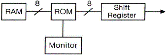
- 문자패턴을 기억한다.
- 제어 프로그램을 기억한다.
- 화면의 커서(Cursor) 위치를 기억한다.
- ASCII 코드를 기억한다.
(정답률: 83%)
68. 다음 중 프로그램카운터의 기능에 대한 설명으로 옳은 것은?
- 다음에 수행할 명령의 주소를 기억하고 있다.
- 데이터가 기억된 위치를 지시한다.
- 기억하거나 읽은 데이터를 보관한다.
- 수행 중인 명령을 기억한다.
(정답률: 80%)
69. 중앙처리장치에서 데이터를 임시 기억하는 장소로 레지스터를 사용한다. 이 레지스터(Register)는 중앙처리장치 내부에 있는 소규모의 임시 기억장치로 범용 레지스터와 특수 레지스터로 분류된다. 다음 중 특수 레지스터에 해당되지 않는 것은?
- 데이터 레지스터
- 누산기(AC; Accumulator)
- 스택 포인터
- 다중 처리기(멀티 프로세서)
(정답률: 60%)
70. 다음 중 코드에 대한 설명으로 틀린 것은?
- BCD(Binary Coded Decimal) 코드는 10진화 2진 코드로서 일반적으로 사용되고 있는 2진수를 10진수로 표현한 것이다.
- BCD 코드는 보수를 구하기 불편하다.
- Excess-3 코드는 BCD 코드에 3(0011)을 더한 코드이다.
- BCD 코드는 0~9까지만이 표현되기 때문에 1010, 1011, 1100, 1101, 1110, 1111의 6가지는 사용되지 않는다.
(정답률: 60%)
71. 중계유선방송의 영상반송파의 신호레벨은 주전송장치의 후단에서 몇 [dBμV]이어야 하는가?
- 55~65
- 65~75
- 75~85
- 75~95
(정답률: 66%)
72. 정보통신공사업법에서 규정하는 공사의 종류에서 방송국 설비공사가 아닌 것은?
- 영상ㆍ음향설비 공사
- 송출설비 공사
- 송ㆍ수신설비 공사
- 방송관리시스템설비 공사
(정답률: 56%)
73. 지상파방송사업을 하려는 자가 방송통신위원회에 허가신청서를 접수한 경우 심사, 허가 여부 결정 및 허가서 교부를 접수일부터 몇 일 이내에 하여야 하는가?
- 7일
- 30일
- 60일
- 90일
(정답률: 70%)
74. 국제전기통신연합(ITU)에서 정의하고 있는 주파수 사용에 대한 내용이 아닌 것은?
- 할당(Allocation)
- 분배(Allotment)
- 배정(Assignment)
- 간섭(Interference)
(정답률: 82%)
75. 중계유선방송 및 음악유선방송의 질적수준에 있어 누설전자파는 216[MHz] 초과인 경우에 몇 [dBμV/m] 이하를 만족해야 하는가? (단, 3[m] 거리에서 측정 시)
- 30
- 35
- 43
- 48
(정답률: 55%)
76. 방송국의 개설허가 심사사항 중 대통령령이 정하는 사항이 아닌 것은?
- 신청인이 설립 중인 법인인 경우에는 해당법인의 설립이 확신한지 여부
- 방송국의 시설설치계획이 합리적인지 여부
- 방송국을 운용할 수 있는 기술적 능력의 보유 여부
- 중파 방송을 하는 방송국인 경우에는 안테나공급전력이 150킬로와트 이하인지 여부
(정답률: 75%)
77. 방송되는 사항의 종류ㆍ내용ㆍ분량ㆍ시각ㆍ배열을 정하는 것을 무엇이라 하는가?
- 방송
- 방송프로그램
- 방송편성
- 방송사업
(정답률: 87%)
78. 다음 중 주파수대의 주파수 범위와 미터 표시로 틀리게 연결된 것은?
- 300[kHz] 초과 3,000[kHz] 이하 - 센티미터파
- 30[MHz] 초과 300[MHz] 이하 - 미터파
- 300[MHz] 초과 3,000[MHz] 이하 - 데시미터파
- 30[kHz] 초과 300[kHz] 이하 - 킬로미터파
(정답률: 85%)
79. 다음 중 방송법의 목적과 거리가 먼 것은?
- 방송의 자유와 독립을 보장
- 시청자의 권익보호와 민주적 여론형성
- 방송의 발전과 공공복리의 증진
- 방송의 기술발전을 개발
(정답률: 73%)
80. 전송설비 및 선로설비의 전력유도의 전압에서 상시 유도위험종전압과 이상시 유도위험전압의 제한치가 알맞은 것은?
- 60[V], 600[V]
- 60[V], 650[V]
- 65[V], 600[V]
- 65[V], 650[V]
(정답률: 74%)